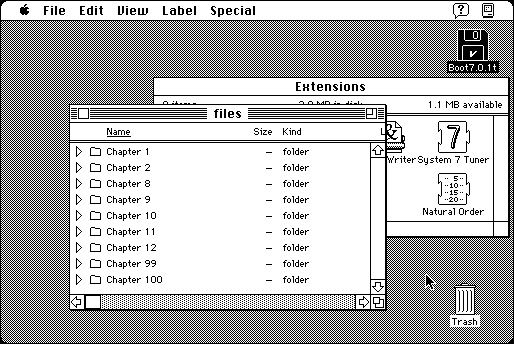

Download
NaturalOrder.zip (20K) Natural Order 1.4 repackaged into a zipped hfs disk image and checksum file. The disk image can be mounted with Mini vMac.
NaturalOrder.cpt.hqx (29K) Natural Order 1.4 in the original format.
copyright: Stuart Cheshire
mod date: Feb 23, 1997
license: free for non-commercial use
from url :
Natural Order Numerical Sorting
A “System Extension that improves the sorting order that your Macintosh uses when it displays lists of items that have numbers in the name.” Source code is included. Requires System 7.

If you find these downloads useful, please consider helping the Gryphel Project, which hosts them.
Here are the md5 checksums for the downloads, signed with Gryphel Key 5:
--------- GRY SIGNED TEXT --------- 326322c77453b1d4f3cb1b5dc1dfe669 NaturalOrder.zip ba0f8909a5812a56ad1c297d444b3afc NaturalOrder.cpt.hqx ------- BEGIN GRY SIGNATURE ------- Gry/4Xa8CFcUzxdN/LEST04/bGDTqjSoTCB6SbKyX1/fRhLAzJ4WIn3b0z73+8a1 KkgWrxXmoAoi/MD8ch+pCD1k5AE687FN+Tk4ujhdbdDqpeh2kMzi8KgOv2BrwZP3 U2fjoizZgPS6uXSv7y/ZffTwqIhUBJNJBrOKVI5BCKimkOMauEI83j5QRBWHj+cw -------- END GRY SIGNATURE --------